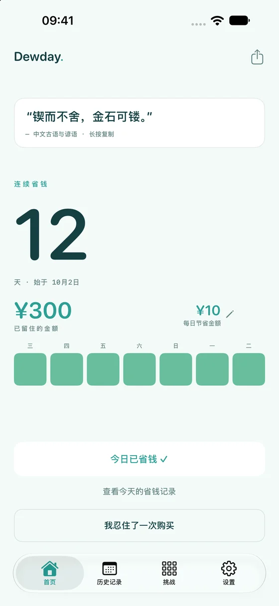
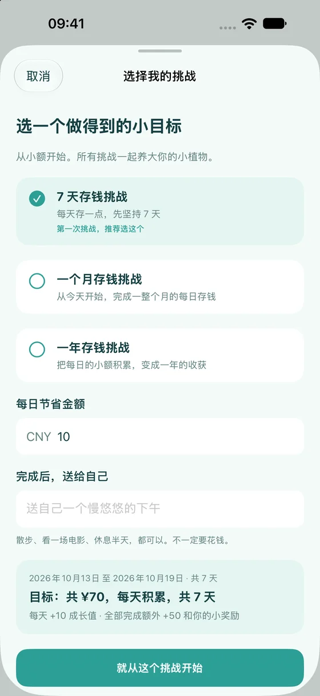

给不花钱的日子打卡
记录不花钱、仅必需支出或其他支出。在日历里查看连胜，也能补记或更正。
iPhone · iOS 17 或更高版本
记录没有额外花费的日子和忍住没买的东西。参加存钱挑战，让虚拟植物随打卡慢慢长大。
无需连接银行账户或注册开发者账号。

可以先从每天打卡开始，也可以设定每天由自己存下的金额。
记录不花钱、仅必需支出或其他支出。在日历里查看连胜，也能补记或更正。
选择 7 天、一个自然月或一个自然年，自己定每天金额与完成奖励。
记录想买但没买的物品和价格。打卡后可累计虚拟成长，也可以分享进度卡片。
例如计划连续 7 天每天存下 5 元，由自己把钱留出来，再在 Dewday 里记下每一天，看植物慢慢长大。

不用。消费选择和金额由你填写，页面展示的省钱金额是估算记录。
可以在日历里查看、补记或更正过去的打卡。
可选择订阅，也可以完成一次可选分享来解锁当天。历史记录仍然可以查看。